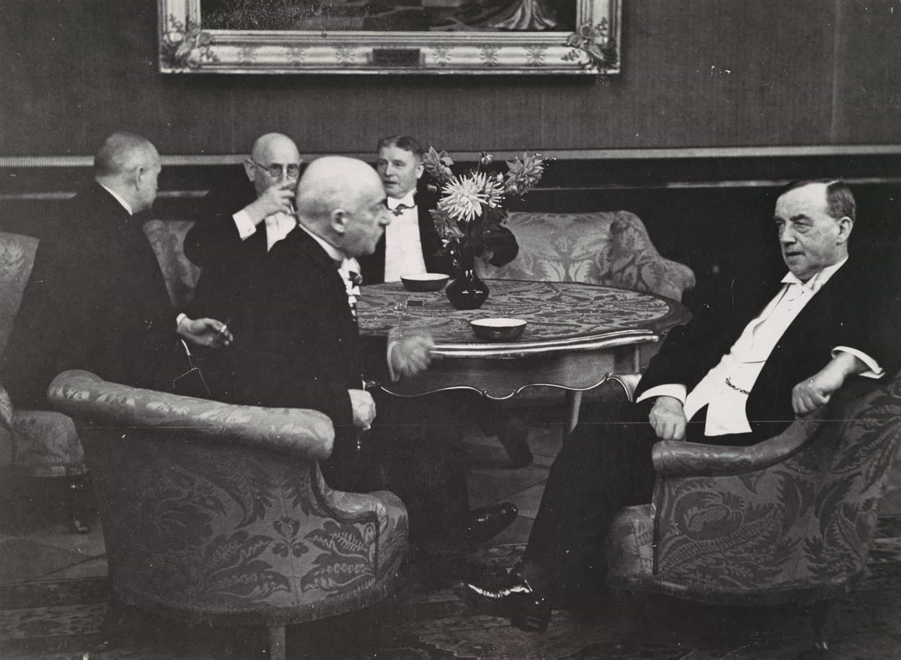
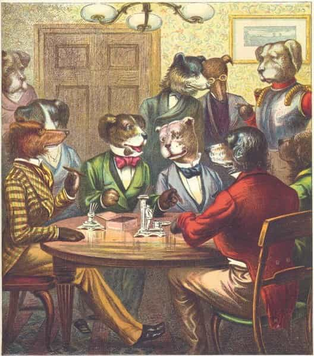

Edgar Tru is a Southern-based objectivist, natural-minded contrarian, and eleutheromania. Follow me on Gab.


I like to eavesdrop on folk’s conversation from time to time. I pay attention to their use in terminology, the subject matter, maturity in their tonality, etc. It’s often them bouncing back-n-forward off one another with goofy replies and overall general silliness. That, or it’s them gossiping and bitching. Men included in all of that.
I find it rather repugnant when men perpetuate gossip or sit around bitching about work or, even more vulgar, another person. It strikes me as unmanly and adopts the more feminine of qualities. Men today may chat about sports, women, or some other minuscule thing instead of local politics or philosophy. I’m not trying to come off as some conversation supremacist; however, I do find I can hold a good chat, with grit and substance, far better than your average Joe.
So, here are six ways to become a better conversationalist, in my opinion.

While one need not adopt another’s position or worldview, it may be obvious that in many conversations, it’s this I’m-right-you’re-wrong! scenario. And even if the facts are on your side, not everything needs to be a debate.
I’ve enjoyed some wonderful conversations with folks whose minds are so open and free that they totally took me by surprise. I had no idea what to think of them because I was this little liberal atheist shit with my tunnel-vision. I’ve since become somewhat more spiritual and clearly right-winged in my political, philosophical, and intellectual evolution. But I was challenged on many occasions and, for whatever reason be, I kept going back at it.
And I find not always feeling the need to be right on everything, and to simply listen to another human animal and their experiences and their worldview, is actually a trait many lack these days. In order to be a conversationalist, one must not act as a protectionist. Allow your mind to open and take in what another espouses without always going on the defensive mode. Trust me, you’ll be okay.
Challenge yourself to embark on a journey of talking to folks you may disagree with. Vehemently even. I recall times when I felt so challenged and my entire worldview seemed placed before me… then smashed to bits. This is both in terms of religion/spirituality and politics.
Now, there’s no need to get so heated a brannigan breaks out. I find this a helpful pathway if one desires to become a better conversationalist because, even if for a moment, it may widen your worldview. My political, philosophical and intellectual journey could simply not be possible if I remained in my little world through a crafted echo-chamber. That came with time, effort and challenge after challenge. And now, I embrace anyone who genuinely challenges my worldview, whether spiritually, culturally or politically.

Take a moment and listen to how quickly people respond to their conversation partner. I always take time before responding. I’m not sure if it’s on purpose or natural to me because I’ve done it for so long. It’s not a race. When one is a good conversationalist they take in deep what the other says, then chews it over a moment. I find one can hone their skills by trying this out.
One reason a person may quickly respond, or already have their sentenced formed and about to go before you’ve fully finished your line of dialogue, is because you’re still on the defensive and are wanting to revert back to the me-versus-you mindset. Avoid it.
If you get the chance, listen to what other men are talking about. A lot of times it’s just dribble. I understand human nature and that we cannot always chat about politics, religion, or philosophy. I just happen to find those the best of conversation pieces when I’m talking with someone man-to-man.
There’s a fine difference between having a discussion about another person or their weak character compared to sitting around continuously taking jabs at them. I once listened to several guys rant on about another man who, by his very nature, is awkward and slower than most. I find that pretty damn repulsive.
I enjoy the occasional use of sarcasm; especially the kind that isn’t so easily noticed due to your tonality. But tonality certainly plays its part and, unless you’re autistic in that fashion, the average bloke with pick up on it.
When I think of the overuse of sarcasm, men like Kyle Kulinski or Cenk Uygar come to mind. Liberalism and sarcasm seem to breed bitched-tongue men. Avoid it because sarcasm is not a trait I’d consider positive to be associated with. I find it, often times more than not, immature and annoying.
I’m sure many have heard folks compare one who cusses like a sailor to being ignorant. Well, some of the brightest men I’ve conversed with cuss like sailors. But, on the flip side, I’ve been in the presence of those who do cuss like sailors and are rather dumb in the head.
Some folks do not like cussing altogether. Personally, I enjoy a really well-placed ‘fuck’ or ‘goddamn.’ It seems, to me, one could even suggest there’s a genuine art to ‘bad words’ and how to best utilize them in conversation. However, I do find women who cuss often to be some of the most idiotic compared to men.
We are men. Men cuss. It’s manly.
These are a few ways I believe could aid one in becoming a better conversationalist. I’ve held some of the most wonderful conversations with men who have the ability to display many of these traits.
I’m not sure there’s enough talk about how to hone in your skills when in conversation. But I find it a somewhat fascinating topic; especially when one eavesdrops on other’s chat only to realize it’s laced with immature piffle and emptiness.
Read Next: 8 Basic Rules For Improving Your Conversation Skills